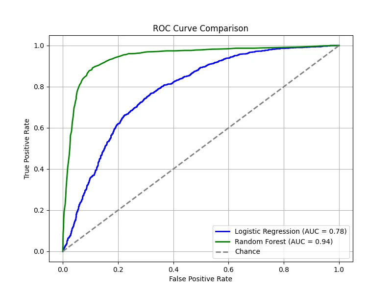
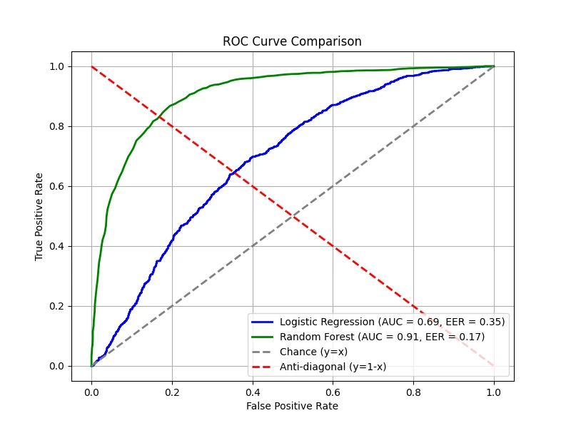
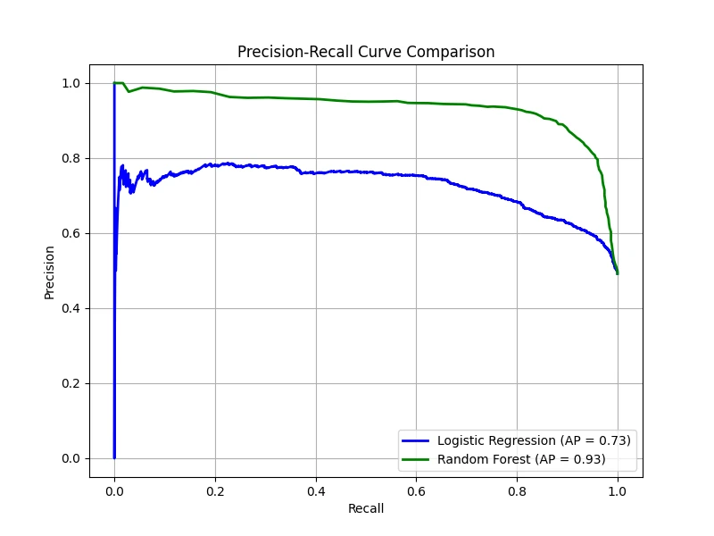
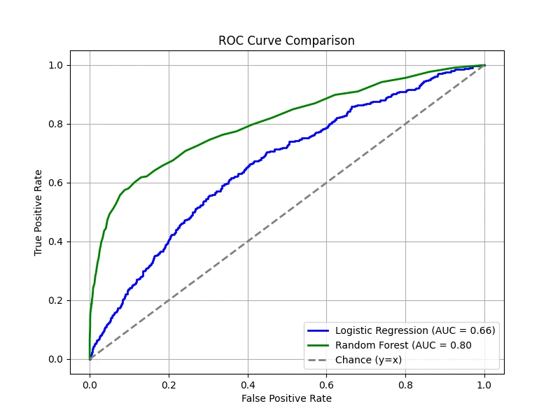
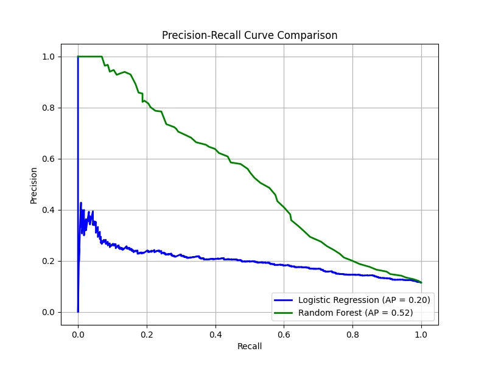

Introduction
So far, our development of Bayesian statistics has focused on inference: given observed data, how should we update
our beliefs about unknown quantities? But inference alone does not tell us what to do. In many applications - medical diagnosis,
spam filtering, autonomous driving - we must ultimately choose an action based on uncertain information. Bayesian decision theory
provides the principled framework for making such optimal decisions under uncertainty.
The setup is as follows. An agent must choose an action \(a\) from a set
of possible actions \(\mathcal{A}\). The consequence of this action depends on the unknown
state of nature \(h \in \mathcal{H}\), which the agent cannot observe directly.
To quantify the cost of choosing action \(a\) when the true state is \(h\), we introduce
a loss function \(l(h, a)\).
The key idea of Bayesian decision theory is to combine the loss function with the posterior distribution
\(p(h \mid \boldsymbol{x})\) obtained from observed evidence \(\boldsymbol{x}\) (or a dataset \(\mathcal{D}\)).
For any action \(a\), the posterior expected loss (or posterior risk) is defined as follows.
................................................
Definition: Posterior Expected Loss
Given evidence \(\boldsymbol{x}\) and a loss function \(l(h, a)\), the posterior expected loss of action
\(a \in \mathcal{A}\) is
\[
\rho(a \mid \boldsymbol{x}) = \mathbb{E}_{p(h \mid \boldsymbol{x})} [l(h, a)] = \sum_{h \in \mathcal{H}} l(h, a) \, p(h \mid \boldsymbol{x}).
\]
A rational agent should select the action that minimizes this expected loss. This leads to the central concept
of the section.
Definition: Bayes Estimator
The Bayes estimator (or Bayes decision rule / optimal policy)
is the action that minimizes the posterior expected loss:
\[
\pi^*(\boldsymbol{x}) = \arg \min_{a \in \mathcal{A}} \, \mathbb{E}_{p(h \mid \boldsymbol{x})}[l(h, a)].
\]
Equivalently, by defining the utility function \(U(h, a) = -l(h, a)\), which measures the
desirability of each action in each state, the Bayes estimator can be written as
\[
\pi^*(\boldsymbol{x}) = \arg \max_{a \in \mathcal{A}} \, \mathbb{E}_{h}[U(h, a)].
\]
This utility-maximization formulation is natural in economics, game theory, and
reinforcement learning, where the focus is on
maximizing expected rewards rather than minimizing losses.
The power of this framework lies in its generality: by choosing different loss functions, we recover many
familiar estimators and decision rules as special cases. We begin with the most common setting in machine
learning - classification under zero-one loss.
Classification (Zero-One Loss)
Perhaps the most common application of Bayesian decision theory in machine learning is
classification: given an input \(\boldsymbol{x} \in \mathcal{X}\), we wish to assign
it the optimal class label. To apply the general framework, we specify the states, actions, and loss function
for this particular setting.
Suppose that the states of nature correspond to class labels
\[
\mathcal{H} = \mathcal{Y} = \{1, \ldots, C\},
\]
and that the possible actions are also the class labels: \(\mathcal{A} = \mathcal{Y}\).
A natural loss function in this context is the zero-one loss, which penalizes
misclassification equally regardless of which classes are confused.
Definition: Zero-One Loss
The zero-one loss is defined as
\[
l_{01}(y^*, \hat{y}) = \mathbb{I}(y^* \neq \hat{y}),
\]
where \(y^*\) is the true label and \(\hat{y}\) is the predicted label.
Under the zero-one loss, the posterior expected loss for choosing label \(\hat{y}\) becomes
\[
\rho(\hat{y} \mid \boldsymbol{x}) = p(\hat{y} \neq y^* \mid \boldsymbol{x}) = 1 - p(y^* = \hat{y} \mid \boldsymbol{x}).
\]
Thus, minimizing the expected loss is equivalent to maximizing the posterior probability:
\[
\pi^*(\boldsymbol{x}) = \arg \max_{y \in \mathcal{Y}} \, p(y \mid \boldsymbol{x}).
\]
In other words, the optimal decision under zero-one loss is to select the mode of the posterior distribution,
which is the maximum a posteriori (MAP) estimate. This provides a decision-theoretic justification for
the MAP estimator that we encountered in Part 14.
The Reject Option
In some scenarios - particularly safety-critical applications such as medical diagnosis or autonomous
driving - the cost of an incorrect classification may be so high that it is preferable for the system
to abstain from making a decision when it is uncertain. This is formalized through the reject option.
Under this approach, the set of available actions is expanded to include a reject action:
\[
\mathcal{A} = \mathcal{Y} \cup \{0\},
\]
where action \(0\) represents the reject option (i.e., saying "I'm not sure"). The loss function
is then defined as
\[
l(y^*, a) =
\begin{cases}
0 & \text{if } y^* = a \text{ and } a \in \{1, \ldots, C\} \\
\lambda_r & \text{if } a = 0 \\
\lambda_e & \text{otherwise}
\end{cases}
\]
where \(\lambda_r\) is the cost of the reject action and \(\lambda_e\) is the cost of a
classification error. For the reject option to be meaningful, we require \(0 < \lambda_r < \lambda_e\); otherwise,
rejecting is either free (and we would always reject) or more expensive than guessing (and we would never reject).
Under this framework, instead of always choosing the label with the highest posterior probability, the optimal policy
chooses a label only when the classifier is sufficiently confident:
\[
a^* =
\begin{cases}
y^* & \text{if } p^* > \lambda^* \\
\text{reject} & \text{otherwise}
\end{cases}
\]
where
\[
p^* = \max_{y \in \{1, \ldots, C\}} p(y \mid \boldsymbol{x}), \qquad
\lambda^* = 1 - \frac{\lambda_r}{\lambda_e}.
\]
Proof that \(\lambda^* = 1 - \frac{\lambda_r}{\lambda_e}\):
The optimal decision is to choose the class label \(y\) if and only if its expected loss
is lower than that of rejecting. The expected loss of choosing \(y\) is
\[
R(y) = \lambda_e \sum_{y^* \neq y} p(y^* \mid \boldsymbol{x}) = \lambda_e [1 - p(y \mid \boldsymbol{x})],
\]
while the expected loss of rejecting is \(R(\text{reject}) = \lambda_r\) (since the cost \(\lambda_r\)
is incurred regardless of the true state). We choose \(y\) if
\[
\begin{align*}
R(y) &< R(\text{reject}) \\\\
\lambda_e [1 - p(y \mid \boldsymbol{x})] &< \lambda_r \\\\
p(y \mid \boldsymbol{x}) &> 1 - \frac{\lambda_r}{\lambda_e} = \lambda^*.
\end{align*}
\]
Thus, if the maximum posterior probability \(p^*\) exceeds the threshold \(\lambda^*\),
the classifier should choose the corresponding label. Otherwise, it should reject.
Confusion Matrix
The Bayes estimator tells us what the optimal decision rule is, but in practice, we need to measure how well a
classifier actually performs on real data. The standard tool for this is the (class) confusion matrix, which
provides a complete summary of the outcomes of classification decisions. We recall the four possible outcomes from
Part 10: Statistical Inference & Hypothesis Testing, where we first
introduced Type I and Type II errors.
For binary classification (\(y \in \{0, 1\}\)), each prediction falls into one of four categories:
- True Positives (TP): instances correctly classified as positive.
- True Negatives (TN): instances correctly classified as negative.
- False Positives (FP): instances incorrectly classified as positive (Type I error).
- False Negatives (FN): instances incorrectly classified as negative (Type II error).
Understanding the distinction between FP and FN is critical because the costs associated with each error type may
differ significantly depending on the application. In safety-critical systems, a false negative (missing a dangerous
condition) is typically far more costly than a false positive (raising an unnecessary alarm). For example, in medical
screening, a false positive means unnecessarily alarming a healthy patient, whereas a false negative means failing to
detect a disease in someone who needs treatment.
Table 1: Confusion Matrix for Binary Classification
\[
\begin{array}{|c|c|c|}
\hline
& \textbf{Predicted Positive} \; (\hat{P} = \text{TP} + \text{FP})
& \textbf{Predicted Negative} \; (\hat{N} = \text{FN} + \text{TN}) \\
\hline
\textbf{Actual Positive} \; (P = \text{TP} + \text{FN}) & \textbf{TP} & \textbf{FN} \\
\hline
\textbf{Actual Negative} \; (N = \text{FP} + \text{TN}) & \textbf{FP} & \textbf{TN} \\
\hline
\end{array}
\]
In the context of Bayesian decision theory, the confusion matrix quantifies the empirical performance
of the Bayes estimator (or any other decision rule) by counting how often the predicted labels match or
mismatch the true labels.
In practice, a binary classifier typically outputs a probability \(p(y = 1 \mid \boldsymbol{x})\),
and the final prediction depends on a decision threshold \(\tau \in [0, 1]\).
For any fixed threshold \(\tau\), the decision rule is
\[
\hat{y}_{\tau}(\boldsymbol{x}) = \mathbb{I}\left(p(y = 1 \mid \boldsymbol{x}) \geq \tau\right).
\]
Given a set of \(N\) labeled examples, we can compute the empirical counts for each cell
of the confusion matrix. For example,
\[
\begin{align*}
\text{FP}_{\tau} &= \sum_{n=1}^N \mathbb{I}(\hat{y}_{\tau}(\boldsymbol{x}_n) = 1, \, y_n = 0),\\\\
\text{FN}_{\tau} &= \sum_{n=1}^N \mathbb{I}(\hat{y}_{\tau}(\boldsymbol{x}_n) = 0, \, y_n = 1).
\end{align*}
\]
Table 2: Threshold-Dependent Confusion Matrix
\[
\begin{array}{|c|c|c|}
\hline
& \hat{y}_{\tau}(\boldsymbol{x}_n) = 1
& \hat{y}_{\tau}(\boldsymbol{x}_n) = 0 \\
\hline
y_n = 1 & \text{TP}_{\tau} & \text{FN}_{\tau} \\
\hline
y_n = 0 & \text{FP}_{\tau} & \text{TN}_{\tau} \\
\hline
\end{array}
\]
Since the confusion matrix depends on the choice of \(\tau\), different thresholds lead to different trade-offs
between error types. How should we choose \(\tau\), and how can we evaluate a classifier's performance across all
possible thresholds? This motivates the ROC and PR curves developed in the following sections.
Receiver Operating Characteristic Curves
Here, we normalize the confusion matrix per row to obtain \(p(\hat{y} \mid y)\). (The sum of the
entries in each row is 1.) The row-normalized confusion matrix is useful when optimizing for recall-focused tasks,
such as detecting rare events like cybersecurity threats or disease outbreaks.
Table 3: Confusion Matrix Normalized per Row
\[
\begin{array}{|c|c|c|}
\hline
& 1 & 0 \\
\hline
1 & \text{TP}_{\tau} / P = \text{TPR}_{\tau} & \text{FN}_{\tau} / P = \text{FNR}_{\tau} \\
\hline
0 & \text{FP}_{\tau} / N = \text{FPR}_{\tau} & \text{TN}_{\tau} / N = \text{TNR}_{\tau} \\
\hline
\end{array}
\]
- True positive rate (TPR) (or Sensitivity / Recall): \[
\text{TPR}_{\tau} = p(\hat{y} = 1 \mid y = 1, \tau) = \frac{\text{TP}_{\tau}}{\text{TP}_{\tau} + \text{FN}_{\tau}}.
\]
- False positive rate (FPR) (or Type I error rate / Fallout): \[
\text{FPR}_{\tau} = p(\hat{y} = 1 \mid y = 0, \tau) = \frac{\text{FP}_{\tau}}{\text{FP}_{\tau} + \text{TN}_{\tau}}.
\]
- False negative rate (FNR) (or Type II error rate / Miss rate):\[
\text{FNR}_{\tau} = p(\hat{y} = 0 \mid y = 1, \tau) = \frac{\text{FN}_{\tau}}{\text{TP}_{\tau} + \text{FN}_{\tau}}.
\]
- True negative rate (TNR) (or Specificity):\[
\text{TNR}_{\tau} = p(\hat{y} = 0 \mid y = 0, \tau) = \frac{\text{TN}_{\tau}}{\text{FP}_{\tau} + \text{TN}_{\tau}}.
\]
Often, we plot the TPR vs FPR as an implicit function of \(\tau\); this plot is known as the receiver operating characteristic
(ROC) curve. The overall quality of a classifier is often summarized using the AUC(Area Under the Curve).
A higher AUC indicates better discriminative ability across all threshold values (max = 1.0).
The figure below compares two classifiers — one trained using logistic regression and the other using a random forest. Both classifiers
provide predicted probabilities for the positive class, allowing us to vary \(\tau\) and compute the corresponding TPR and FPR. A diagonal
line is also drawn, representing the performance of a random classifier — i.e., one that assigns labels purely by chance. On this line,
the TPR equals the FPR at every threshold. If a classifier's ROC curve lies on this diagonal, it means the classifier is performing no
better than random guessing. In contrast, any performance above the diagonal indicates that the classifier is capturing some signal,
while performance below the diagonal (rare in practice) would indicate worse-than-random behavior.
In our demonstration, the logistic regression model has been intentionally made worse, yielding an AUC of 0.78, while the random forest
shows superior performance with an AUC of 0.94. These results mean that, overall, the random forest is much better at distinguishing
between the positive and negative classes compared to the underperforming logistic regression model.

(Data: 10,000 samples, 20 total features, 5 features are informative, 2 clusters per class, 5% label noise.)
Equal Error Rate (EER)
The equal error rate (EER) is the point where FPR = FNR. This is an important threshold in
some applications (e.g., biometric authentication) where false positives and false negatives are equally costly. The EER provides
a single value to compare classifiers, particularly when precision and recall trade-offs must be balanced.
Below is the EER point for our models, showing where the two error rates intersect:

Note: the minimum EER is 0 corresponding to the top left corner. In many real-world applications,
we might tune the threshold to minimize EER.
Precision-Recall (PR) Curves
Next, we normalized the original confusion matrix per column to obtain \(p(y \mid \hat{y})\).
(The sum of the entries in each column is 1.) The column-normalized confusion matrix is useful when the precision
is crucial (e.g., medical diagnosis, fraud detection).
Table 4: Confusion Matrix Normalized per Column
\[
\begin{array}{|c|c|c|}
\hline
& 1 & 0 \\
\hline
1 & \text{TP}_{\tau} / \hat{P} = \text{PPV}_{\tau} & \text{FN}_{\tau} / \hat{N} = \text{FOR}_{\tau} \\
\hline
0 & \text{FP}_{\tau} / \hat{P} = \text{FDR}_{\tau} & \text{TN}_{\tau} / \hat{N} = \text{NPV}_{\tau} \\
\hline
\end{array}
\]
- Positive predictive value (PPV) (or Precision):\[
\text{PPV}_{\tau} = p(y = 1 \mid \hat{y} = 1, \tau) = \frac{\text{TP}_{\tau}}{\text{TP}_{\tau} + \text{FP}_{\tau}}.
\]
- False discovery rate (FDR):\[
\text{FDR}_{\tau} = p(y = 1 \mid \hat{y} = 0, \tau) = \frac{\text{FP}_{\tau}}{\text{TP}_{\tau} + \text{FP}_{\tau}}.
\]
- False omission rate (FOR):\[
\text{FOR}_{\tau} = p(y = 0 \mid \hat{y} = 1, \tau) = \frac{\text{FN}_{\tau}}{\text{FN}_{\tau} + \text{TN}_{\tau}}.
\]
- Negative predictive value (NPV):\[
\text{NPV}_{\tau} = p(y = 0 \mid \hat{y} = 0, \tau) = \frac{\text{TN}_{\tau}}{\text{FN}_{\tau} + \text{TN}_{\tau}}.
\]
To summarize a system's performance — especially when classes are imbalanced (i.e., when the positive class is rare)
or when false positives and false negatives have different costs — we often use a precision-recall (PR) curve. This
curve plots precision against recall as the decision threshold \(\tau\).
Imbalanced datasets appear frequently in real-world machine learning applications where one class is naturally much rarer than
the other. For example, in financial transactions, fraudulent activities are rare compared to legitimate ones. The classifier must
detect the very few fraud cases (positive class) among millions of normal transactions (negative class).
Let precision be \(\mathcal{P}(\tau)\) and recall be \(\mathcal{R}(\tau)\). If \(\hat{y}_n \in \{0, 1\}\) is the predicted
label and \(y_n \in \{0, 1\}\) is the true label, then at threshold \(\tau\), precision and recall can be estimated by:
\[
\mathcal{P}(\tau) = \frac{\sum_n y_n \hat{y}_n}{\sum_n \hat{y}_n},
\quad
\mathcal{R}(\tau) = \frac{\sum_n y_n \hat{y}_n}{\sum_n y_n}.
\]
By plotting the precision vs recall for various the threshold \(\tau\), we obtain the PR curve.

This curve visually represents the trade-off between precision and recall. It is particularly valuable in situations where one
class is much rarer than the other or when false alarms carry a significant cost.
Raw precision values can be noisy; therefore, an interpolated precision is often computed. For a given recall
level (e.g., at least 10%), the interpolated precision is defined as the maximum precision observed for any recall level greater
than or equal to that value. The average precision (AP) is the average of these interpolated precision values
over the entire range of recall. Conceptually, AP is equal to the area under the interpolated PR curve.
It provides a single number summary of the classifier's performance across all thresholds. Note that the AP calculated from the interpolated curve may differ
from the area under the raw PR curve.
In our case, the logistic regression produced an AP of 0.73, meaning that on average, when this classifier predicts positive,
about 73% of its predictions are correct, and the random Forest produced an AP of 0.93, indicating a much stronger performance.
Note: In settings where multiple PR curves are generated (for example, one for each query in information retrieval or one per class in
multi-class classification), the mean average precision (mAP) is computed as the mean of the AP scores over all
curves. mAP offers an overall performance measure across multiple queries or classes.
Class Imbalanced
A dataset is considered imbalanced when one class has significantly fewer examples than the other. For example, in a binary
classification task, a dataset may contain only 5% positive samples and 95% negative samples. In such cases, many traditional
evaluation metrics, like accuracy, can be misleading. A model that always predicts the majority class (negative) can achieve
high accuracy without correctly identifying minority class instances.
The ROC-AUC metric is often insensitive to class imbalance because the TPR is defined as a ratio
within the positive samples and the FPR is defined as a ratio within the negative samples only. So, it does not matter which class
we define as positive or negative.
On the other hand, PR-AP metric is more sensitive to class imbalance. Remember that the precision is given by:
\[
\text{Precision} = \frac{TP}{TP + FP},
\]
which depends "both" on positive and negative samples.
To demonstrate this, we create a dataset where 90% of the samples belong to the negative class and only 10% belong to the positive class.
Then, we train both the logistic regression model and the random forest model again:


ROC curves remain relatively smooth, and AUC does not drop drastically, even though the dataset is highly imbalanced.
PR curves, however, show a much distinct difference, with lower AP scores, highlighting how class imbalance makes it harder to
achieve good precision and recall simultaneously. Even though random forest performs better than logistic regression, it struggles
to detect the rare positive cases effectively.
Note: PR curves focus on precision and recall, which directly reflect how well a model identifies the rare (minority) class. Precision,
in particular, is affected by even a small number of false positives, giving a more realistic picture of performance when the positive
class is scarce. Thus, PR-AP is usually the better choice for class imbalance problems because it directly measures performance on the
minority class.